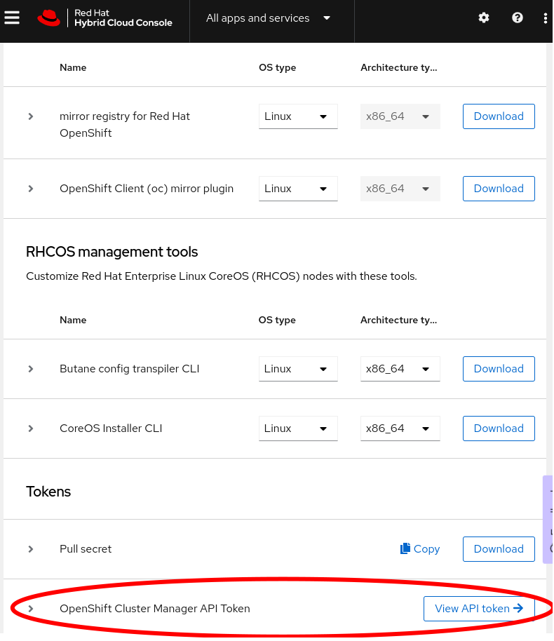
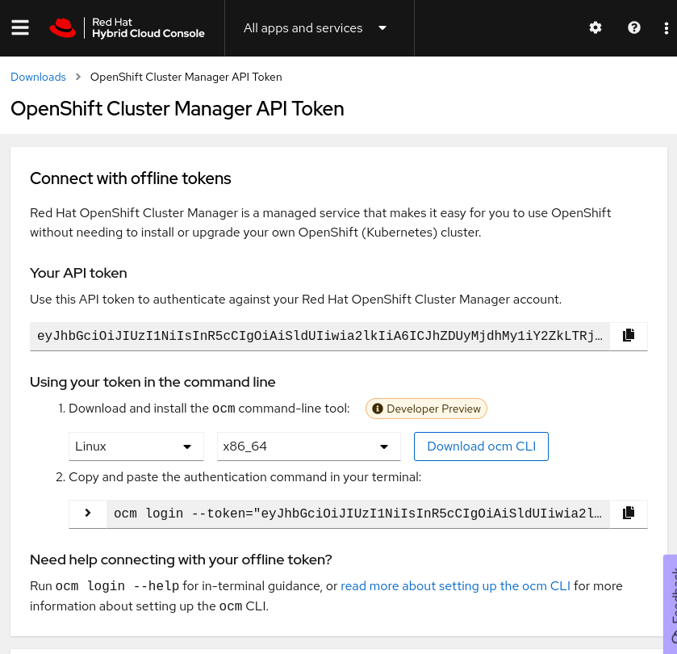
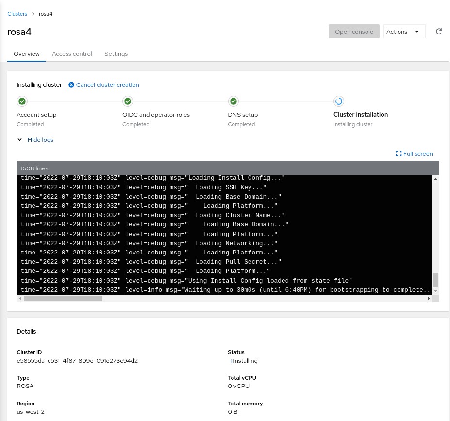
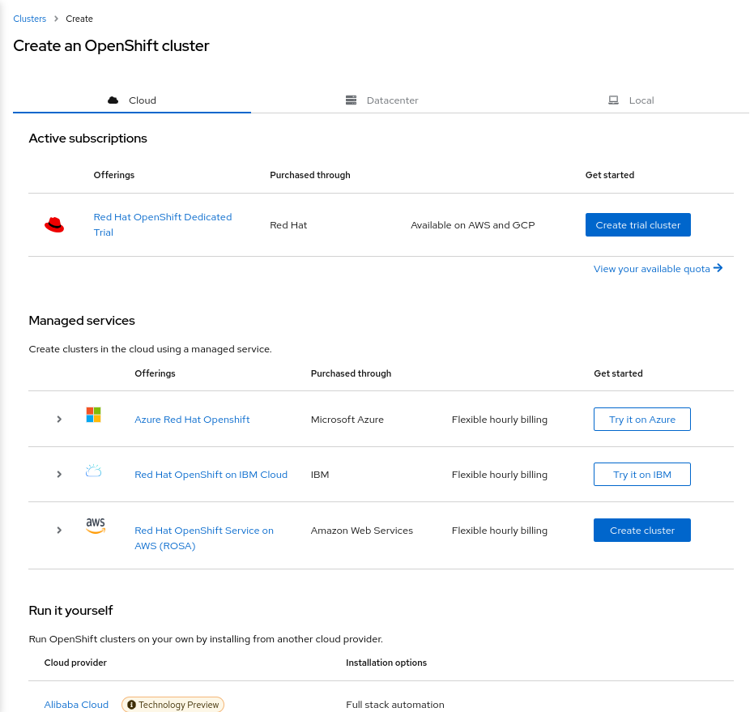
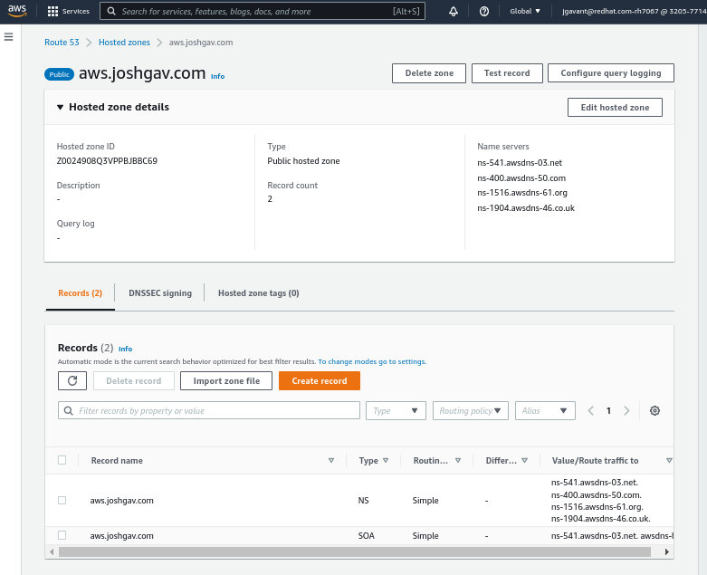
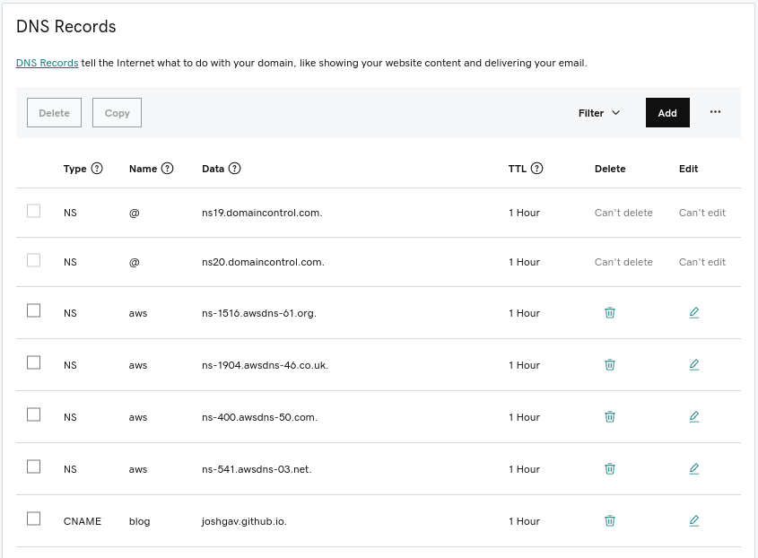

Run OpenShift on AWS
Summary: Descriptions and simple scripts for supported ways to deploy OpenShift on Amazon Web Services - ROSA, IPI and UPI.
Overview
OpenShift is Kubernetes with batteries included and verified - that is, OpenShift is ready to run complex first- and third-party applications and digital workloads as soon as installation is complete. For example, every OpenShift cluster includes a software-defined network provider, a container and source build system and artifact registry, an Internet-facing router and even a system for maintaining and updating cluster components. Contrast this with a cluster provisioned by upstream kubeadm or even the more featureful kubespray, where adding these and other critical features requires thoughtful and sometimes fragile integration.
Not only does OpenShift offer a ready-to-use Kubernetes environment for developers and operators once deployed, but deployment itself has also become remarkably simple despite the many parts, especially when a cluster is deployed in a public cloud provider like AWS. Gone are the days when operators and infrastructure teams would have to pre-provision hardware and operating systems and carefully configure and patch datacenter networks before cluster installation could even begin. Though it’s still possible to customize OpenShift and its supporting infrastructure to your heart’s content, many use cases can be met with just the defaults, a cloud provider account and a few well-written commands.
In this article we’ll discuss three ways to deploy and run OpenShift on Amazon Web Services (AWS), and we’ll contrast these with deploying upstream Kubernetes with kubespray. The methods are presented in order of increasing complexity and customizability: ROSA -> IPI -> UPI -> Kubespray.
Follow along and contribute to code at https://github.com/joshgav/openshift-on-aws.git.
Contents
- Red Hat OpenShift Service on AWS (ROSA)
- OpenShift Installer-provisioned infrastructure
- OpenShift User-provisioned infrastructure
- Kubernetes with Kubespray
ROSA: Red Hat OpenShift Service on AWS
Let’s start with the simplest option: Red Hat OpenShift Service on AWS, “ROSA”. A ROSA cluster includes deployment, configuration and management of required compute, network and storage resources in AWS as well as all the resources and services of a OpenShift Kubernetes cluster. As opposed to other options to follow, a ROSA environment is fully supported by Red Hat’s operations teams - open a ticket and an expert Red Hat SRE will attend to it quickly.
Setup
At the core of the ROSA lifecycle are the rosa CLI tool and the OpenShift Cluster Manager (OCM) service (UI: https://console.redhat.com/openshift). Get the CLI from the Downloads section of the Red Hat Console (free account required) or directly from https://mirror.openshift.com/pub/openshift-v4/clients/rosa/latest/rosa-linux.tar.gz. Source is at https://github.com/openshift/rosa. The ROSA CLI invokes OCM services as described at https://api.openshift.com/, which in turn provision required infrastructure.
You’ll need both Red Hat and AWS credentials to enable the rosa CLI to provision and connect to resources. Your AWS credentials can be specified as exported AWS_ACCESS_KEY_ID, AWS_SECRET_ACCESS_KEY and AWS_REGION environment variables as for the AWS CLI.
To get a token to login to your Red Hat account, click “View API token” at the bottom of the Downloads page as shown in the following screenshots, or go straight to the token page. On that page click “Load token”, then copy the raw token (not the ocm command line) and run rosa login --token="${your_token}". If successful you will see this message (with your username of course): "I: Logged in as 'joshgavant' on 'https://api.openshift.com'.
 
To verify that you’ve logged in successfully to both accounts run rosa whoami. If connections were successful you’ll see a list of attributes about each account.
Tip: To quickly enable autocompletion for
rosacommands in your current shell session run. <(rosa completion).
IAM Roles
Next you’ll need to create and link AWS IAM roles defining the limited permissions granted to the cluster manager service and Red Hat operations team members. In the recommended “STS” mode, these roles are applied to short-lived tokens issued to machine and human operators on demand.
The following commands grant required access to the OpenShift Cluster Manager (OCM) and its installers. The last command creates roles to act as profiles for the EC2 instances. By specifying --admin and --mode=auto several additional roles will be automatically created during installation.
rosa create --yes ocm-role --admin --mode=auto --prefix="ManagedOpenShift"
rosa create --yes user-role --mode=auto --prefix="ManagedOpenShift"
rosa create --yes account-roles --mode=auto --prefix="ManagedOpenShift"
Create cluster
Now that your Red Hat account is bound to your AWS account you can proceed to create your ROSA cluster! Here we’ll continue to use the rosa CLI; later we’ll mention another approach. Run the following command to create a cluster in STS mode.
CLUSTER_NAME=rosa1
rosa create --yes cluster --cluster-name "${CLUSTER_NAME}" --sts --mode=auto --watch
You can also interactively provide configuration options at cluster creation time by running rosa create cluster and answering the prompts.
Monitor installation
By setting the --watch flag in the above command installation logs will stream to stdout and the command won’t return till installation completes successfully or fails, typically >30 minutes. You can also start watching logs anytime with rosa logs install --cluster ${CLUSTER_NAME} --watch.
Finally, you can review logs and other attributes of your new cluster in the Red Hat Console. Click into it and expand the “Show logs” section to reach a view like the following:

Use cluster
Once ready, the easiest way to begin using your cluster immediately is to create a one-off cluster-admin user as follows. Later you can allow users from a specific OpenIDConnect (OIDC) identity provider using rosa create oidc-provider ....
## create a cluster-admin user
rosa create --yes admin --cluster "${CLUSTER_NAME}"
You’ll need URLs to reach the API server and web console of your new cluster; get those with rosa list clusters. Finally, log in to the cluster via the oc CLI: oc login --user cluster-admin --password ${admin_password}.
Create cluster via UI
Instead of using the rosa CLI, once your Red Hat and AWS accounts have been linked as described above you can also choose to create a cluster via a guided graphical wizard in the Console. On the Clusters page on the Red Hat Console click “Create cluster”, then on the Cluster create page click “Create cluster” next to the ROSA offering, as in the following screenshot:

Your AWS account will be listed by its ID on the first page of the wizard. Follow the prompts to configure and install a cluster.
Installer-provisioned infrastructure (IPI)
Even if your cluster won’t be managed by Red Hat it can still be deployed and configured in AWS automatically with a short list of commands. This method will set up EC2 machines and volumes and VPC networks as well as the cluster itself. It’s known as “Installer-provisioned infrastructure” (IPI); here’s how to do it.
Setup
At the heart of IPI and other OpenShift deployment methods is the openshift-install CLI tool. Download it from the downloads section of the OpenShift console, or directly from https://mirror.openshift.com/pub/openshift-v4/x86_64/clients/ocp/stable/openshift-install-linux.tar.gz. Its source is at https://github.com/openshift/installer. Run openshift-install create --help for a list of installation steps, which by default proceed as follows:
- install-config: Generate configuration manifest for infrastructure and cluster
- manifests: Generate required Kubernetes resource manifests
- ignition-configs: Embed Kubernetes resource manifests in OS configuration files
- cluster: Provision EC2 machines and bootstrap them with the configuration files created previously
You’ll also need a pull secret with credentials for Red Hat’s container registries. Copy this from https://console.redhat.com/openshift/downloads#tool-pull-secret.
A SSH key pair is required for access to provisioned machines; you’ll need to provide its public key to the installer and save the private key for access. You can copy an existing key from (for example) ~/.ssh/id_rsa.pub or create a new one in a secure place using (for example) ssh-keygen -t rsa -b 4096 -C "user@openshift" -f "./id_rsa" -N ''. Copy the contents of the *.pub file as the value of SSH_PUBLIC_KEY below and save the private key for later.
Finally, to be able to access your cluster’s API server and web console by name you’ll need an AWS Route53 public hosted zone for your cluster’s base domain name. For example, I delegate a domain named aws.joshgav.com from my registrar GoDaddy to a new AWS Route53 zone, see following screenshots. Specifically, after creating the Route53 zone I create NS records for aws in the parent joshgav.com zone at GoDaddy pointing to the name servers selected by Route53. More details from RedHat here and from AWS here.
 
Create cluster
With these prerequisites in place, you’ll use openshift-install create ... to manage phases of the installation process. An automatable approach is to define the desired config of your cluster in a file named install-config.yaml, put it in a directory ${WORKDIR} and run the installer in the context of that directory like so: openshift-install create cluster --dir ${WORKDIR}. For example, following is a template install-config.yaml file; use your own values for OPENSHIFT_PULL_SECRET, YOUR_DOMAIN_NAME and SSH_PUBLIC_KEY established above.
The schema for
install-config.yamlis in
https://github.com/openshift/installer/blob/master/pkg/types/installconfig.go.
apiVersion: v1
metadata:
name: ipi
baseDomain: ${YOUR_DOMAIN_NAME}
controlPlane:
architecture: amd64
hyperthreading: Enabled
name: master
platform: {}
replicas: 3
compute:
- architecture: amd64
hyperthreading: Enabled
name: worker
platform: {}
replicas: 3
networking:
networkType: OVNKubernetes
clusterNetwork:
- cidr: 10.128.0.0/14
hostPrefix: 23
machineNetwork:
- cidr: 10.0.0.0/16
serviceNetwork:
- 172.30.0.0/16
platform:
aws:
region: us-east-1
publish: External
pullSecret: '${OPENSHIFT_PULL_SECRET}'
sshKey: '${SSH_PUBLIC_KEY}'
Monitor installation
Cluster installation will take 30 minutes or more. Watch logs stream to stdout following the openshift-install create cluster command, run openshift-install wait-for install-complete, or tail the .openshift_install.log file in the installation working directory to track progress of infrastructure and cluster installation.
Internally, openshift-install deploys infrastructure as described in these Terraform configs, and many log entries come from Terraform.
Use cluster
A username and password for your cluster will be in the final lines of the install log, either on stdout or in the .openshift_install.log file in the working directory. In addition, a “kubeconfig” file and the kubeadmin user’s password are saved in the auth directory of the installation dir. Login to your cluster using one of the following mechanisms:
## using kubeconfig with embedded certificate
export KUBECONFIG=temp/_workdir/auth/kubeconfig
## using username and password
oc login --user kubeadmin --password "$(cat temp/_workdir/auth/kubeadmin-password)"
## verify authorization
oc get pods -A
User-provisioned infrastructure (UPI)
Though the easiest way to get started with OpenShift on AWS is with ROSA or installer-provisioned infrastructure (IPI), Red Hat also enables you to deploy and configure your own cloud infrastructure - machines, networks, and storage - and provision a cluster on those via a method known as “user-provisioned infrastructure” or UPI.
Setup
Like IPI installations, UPI installations use openshift-install and the other prerequisites to generate resource manifests and OS configuration files. Unlike IPI though, it’s up to the user to configure machines and supply these files to them when needed. For example, in AWS this is often accomplished by putting configurations in a S3 bucket and asking machines to retrieve them from the bucket’s URL on startup.
Create cluster
To guide users in provisioning their own infrastructure Red Hat provides a set of CloudFormation templates reflecting good patterns for OpenShift clusters; these templates are available here and the example which accompanies this article uses them.
Creating a UPI cluster in AWS follows these high-level steps:
- Initialize Kubernetes manifests and OS configurations with
openshift-install - Deploy AWS networks and machines using recommended CloudFormation templates or equivalent mechanisms, bootstrapping machines from generated configurations
- Await completed installation using
openshift-install
The AWS resources recommended for OpenShift include a VPC and subnets, a DNS zone and records, load balancers and target groups, IAM roles for EC2 instances, security groups and even an S3 bucket. Several kinds of cluster nodes are also included - bootstrap, control plane and worker. The bootstrap machine starts first and installs the production cluster on the other machines.
Full instructions for AWS UPI are here.
Monitor installation
Once EC2 instances have started and installation of bootstrap and production clusters has begun, you can monitor progress using openshift-install wait-for [install-complete | bootstrap-complete] in your working directory. As with other methods installation will probably take more than 30 minutes.
One step in cluster provisioning is intentionally difficult to automate - approving Certificate Signing Requests (CSRs) for nodes. Ideally an administrator should verify the provenance of a CSR is the expected node prior to approving the request. You can check if CSRs are awaiting approval with oc get csr. Approve all pending requests with something like the following:
csrs=($(oc get csr -o json | jq -r '.items[] | select(.status == {}) | .metadata.name'))
for csr in "${csrs[@]}"; do
oc adm certificate approve "${csr}"
done
In the sample scripts which accompany this article this check runs in the background while the cluster is being provisioned so that CSRs are immediately approved.
Use cluster
With UPI you don’t use the openshift-install create cluster command; instead run openshift-install wait-for install-complete after the installation process has started. Like with IPI you can monitor stdout of this command and/or the .openshift_install.log file for info on progress of cluster installation. When the cluster is ready, log in as above with oc login as the kubeadmin user with the password in ${workdir}/auth/kubeadmin-password, or set your KUBECONFIG env var to the path ${workdir}/auth/kubeconfig.
Once ready reach the console of your cluster at https://console-openshift-console.apps.${CLUSTER_NAME}.${BASE_DOMAIN}/.
Kubespray
The previous sections described how to deploy OpenShift, Red Hat’s Kubernetes distribution, on Amazon Web Services with various levels of support and automation for provisioning and operation. In this section we’ll deploy upstream Kubernetes using Kubespray to compare, contrast and gather new ideas. Notably, kubespray’s included configuration for AWS infrastructure yields the following environment, nearly identical to that produced by openshift-install and ROSA.

As with user-provisioned infrastructure (UPI) for OpenShift, with Kubespray the user first installs infrastructure as they will (e.g. with Terraform or CloudFormation) and then uses Kubespray to install a cluster on that infrastructure. Kubespray offers Terraform configurations for deploying typical environments in cloud providers; for this example I used the configurations for AWS.
Note: The most basic cluster installation tool is kubeadm, but it leaves many critical aspects of the cluster incomplete, such as a network overlay, container registry and load balancer controller. Kubespray is also maintained by the Kubernetes project and provides a more complete deployment.
Create cluster
The last step of infrastructure provisioning creates an inventory file for Ansible to consume to deploy cluster components. When infrastructure is deployed and that file is ready run the main Kubespray process - an Ansible playbook - using that inventory, e.g.: ansible-playbook -i hosts.ini cluster.yaml. Customize the deployment by changing variables in inventory vars files or by passing -e key=value pairs to the ansible-playbook invocation. Check out the the deploy-cluster.sh script in the walkthrough for examples.
Rather than installing the Kubespray Ansible environment locally, you may prefer to run commands in a containerized process bound to your inventory and SSH files, for example as follows:
podman run --rm -it \
--mount type=bind,source=kubespray/inventory/cluster,dst=/inventory,relabel=shared \
--mount type=bind,source=.ssh/id_rsa,dst=/root/.ssh/id_rsa,relabel=shared \
quay.io/kubespray/kubespray:v2.19.0 \
bash
# when prompted, enter (for example):
ansible-playbook cluster.yml \
-i /inventory/hosts.ini \
--private-key /root/.ssh/id_rsa \
--become --become-user=root \
-e "kube_version=v1.23.7" \
-e "ansible_user=ec2-user" \
-e "kubeconfig_localhost=true"
Use cluster
The Ansible variable kubeconfig_localhost=true indicates that a kubeconfig file with credentials for the provisioned cluster should be written to the inventory directory once the cluster is ready. You can use this config to authenticate to the cluster’s API server and invoke kubectl commands.
Initially the kubeconfig file will use an AWS-internal IP address for the location of the API server. To manage your cluster from outside AWS you’ll need to change the server’s URL to the address of your externally-accessible load balancer (provisioned by Terraform previously). You can find the external load balancer URL with the command aws elbv2 describe-load-balancers --output json | jq -r '.LoadBalancers[0].DNSName'. Replace the server URL in the kubeconfig file with this hostname, being sure to prepend https:// and append :6443/.
Finally, set your KUBECONFIG env var to the file’s path, i.e. export KUBECONFIG=inventory/cluster/artifacts/admin.conf and then run kubectl get pods -A. If all is well you should get a list of all pods in the cluster.
Conclusion
In this article and accompanying code we’ve discussed and demonstrated how to deploy an OpenShift or upstream Kubernetes cluster in AWS using four different methods which progress from simplest with least control to most complex yet customizable: ROSA -> IPI -> UPI -> Kubespray.
To minimize the complexity and overhead of managing your own clouds and clusters, start with the simplest method - ROSA - and progress to others as greater control and customization is needed.
Please provide feedback in the repo or on Twitter. Thank you!